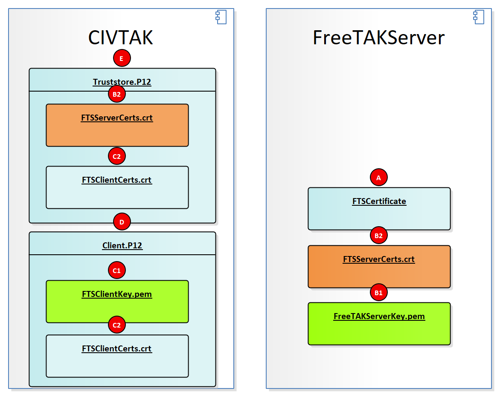

SSL
Secure Sockets Layer (SSL) is a protocol for secure communication. FTS supports SSL since version 1.3.
Automated SSL Generation and Deployment
Since version 1.5, FTS features automated SSL generation and deployment.
The automated generation and deployment is easier, please consider using that approach.
For more details, read the FTS manual here.
Expected File Structure

Manual SSL Installation Guide
This method requires understanding of complex console commands.
We do not provide support for certificate generation or deployment issues.
We are currently exploring tools like YAOG to simplify the process.
Some of the steps below to create a server and client certificate are adopted from:
1. Install OpenSSL on Windows using the choco package manager
Go to:
https://docs.chocolatey.org/en-us/choco/setup#installing-chocolatey
and install the choco package manager.
Next, temporarily append the choco executable to the PATH variable.
After PowerShell is closed, the appended path will resort back to its original state.
$env:Path += ";C:\ProgramData\chocolatey\bin"
To permanently add to the PATH variable, refer to:
https://www.computerhope.com/issues/ch000549.htm
Next, install OpenSSL:
choco install openssl
Do not close PowerShell because you will need it for the next steps.
2. Add OpenSSL to the PATH
Most likely, you will be running a 64-bit system. For a 64-bit system, enter:
$env:Path += ";C:\Program Files\OpenSSL-Win64\bin"
For a 32-bit system (unlikely), enter:
$env:Path += ";C:\Program Files\OpenSSL-Win32\bin"
3. Set up a directory for OpenSSL outputs
Go to your home directory.
cd ~
Make an invisible folder called .certs.
mkdir .certs
Go into the .certs directory.
cd .certs
4. Generate the Certificate Authority Certificate
Create a private key for the CA certificate.
openssl ecparam -name prime256v1 -genkey -noout -out ca.key
A ca.key will be outputted to the directory:
Mode LastWriteTime Length Name
---- ------------- ------ ----
-a---- 11/10/1775 6:00 PM 232 ca.key
Next, create CA certificate from the newly created private key.
openssl req -new -x509 -sha256 -key ca.key -out ca.crt
Certificate Authority Metadata Fields
Creating a Certificate Authority (CA) involves generating a self-signed root certificate with various metadata fields. Below is a table that describes some of the common metadata fields that can be set in a CA certificate.
| Metadata Field | X.509 Attribute | Description |
|---|---|---|
| Common Name | CN |
The fully qualified domain name (FQDN) or name of the CA. For root CAs, this field often contains the organization's name. e.g. https://github.com/FreeTAKTeam |
| Organization | O |
The legal name of the organization that is running the CA. e.g. FreeTAKTeam |
| Organizational Unit | OU |
The division or department within the organization that is responsible for managing the CA. |
| Locality | L |
The city or locality where the organization is located. |
| State | ST |
The state, province, or region where the organization is located. |
| Country | C |
The two-letter ISO country code for the country where the organization is located. |
| Email Address | emailAddress |
The email address for contacting the CA administrator. |
| Serial Number | N/A | A unique identifier for the certificate. It is used to identify the certificate within a CA's database. |
| Validity Period | N/A | Specifies the time period during which the certificate is valid. It includes a start date (NotBefore) and an end date (NotAfter). |
| Key Usage | N/A | Defines the purposes for which the certificate's public key can be used, such as digital signature, key encipherment, and certificate signing. |
| Extended Key Usage | N/A | Specifies additional purposes for which the public key may be used, like server authentication, client authentication, code signing, etc. |
| Subject Alternative Name | SAN |
Specifies additional host names or IP addresses that are protected by this certificate. Useful for multi-domain or wildcard certificates. |
| Issuer | N/A | Information about the entity that issued the certificate. For a self-signed root CA, the issuer is the CA itself. |
| Version | N/A | Indicates the X.509 version used. Most modern certificates use version 3. |
| Signature Algorithm | N/A | The algorithm used to create the certificate's signature. Common algorithms include RSA-SHA256 and ECDSA-SHA256. |
You will be prompted to enter in certificate details. Here is an example:
You are about to be asked to enter information that will be incorporated
into your certificate request.
What you are about to enter is what is called a Distinguished Name or a DN.
There are quite a few fields but you can leave some blank
For some fields there will be a default value,
If you enter '.', the field will be left blank.
-----
A ca.crt will be outputted to the directory.
Mode LastWriteTime Length Name
---- ------------- ------ ----
-a---- 11/10/1775 6:00 PM 944 ca.crt
-a---- 11/10/1775 6:00 PM 232 ca.key
5. Generate the Server Certificate
Generate the server private key.
openssl ecparam -name prime256v1 -genkey -noout -out server.key
A server.key will be outputted to the directory:
Mode LastWriteTime Length Name
---- ------------- ------ ----
-a---- 11/10/1775 6:00 PM 944 ca.crt
-a---- 11/10/1775 6:00 PM 232 ca.key
-a---- 11/10/1775 6:00 PM 232 server.key
Next, generate the server certificate signing request.
openssl req -new -sha256 -key server.key -out server.csr
You will be prompted to enter in certificate details. Here is an example:
You are about to be asked to enter information that will be incorporated
into your certificate request.
What you are about to enter is what is called a Distinguished Name or a DN.
There are quite a few fields but you can leave some blank
For some fields there will be a default value,
If you enter '.', the field will be left blank.
-----
Country Name (2 letter code) [AU]:US
State or Province Name (full name) [Some-State]:CA
Locality Name (eg, city) []:Los Angeles
Organization Name (eg, company) [Internet Widgits Pty Ltd]:Acme Corporation
Organizational Unit Name (eg, section) []:Dev
Common Name (e.g. server FQDN or YOUR name) []:Wile E. Coyote
Email Address []:wile@acmecorp.com
Please enter the following 'extra' attributes
to be sent with your certificate request
A challenge password []:badpassword
An optional company name []:Acme Corporation
A server.csr will be outputted to the directory:
Mode LastWriteTime Length Name
---- ------------- ------ ----
-a---- 11/10/1775 6:00 PM 944 ca.crt
-a---- 11/10/1775 6:00 PM 232 ca.key
-a---- 11/10/1775 6:00 PM 626 server.csr
-a---- 11/10/1775 6:00 PM 232 server.key
Next, generate the server certificate.
openssl x509 -req -in server.csr -CA ca.crt -CAkey ca.key -CAcreateserial -out server.crt -days 1000 -sha256
Something similar to this will be outputted:
Signature ok
subject=C = US, ST = CA, L = Los Angeles, O = Acme Corporation, OU = Dev, CN = Wile E. Coyote, emailAddress = wile@acmecorp.com
Getting CA Private Key
A server.crt and ca.srl will be outputted to the directory:
Mode LastWriteTime Length Name
---- ------------- ------ ----
-a---- 11/10/1775 6:00 PM 944 ca.crt
-a---- 11/10/1775 6:00 PM 232 ca.key
-a---- 11/10/1775 6:00 PM 42 ca.srl
-a---- 11/10/1775 6:00 PM 820 server.crt
-a---- 11/10/1775 6:00 PM 626 server.csr
-a---- 11/10/1775 6:00 PM 232 server.key
6. Generate the Client Certificate
These are the same steps as above, except for the client.
Generate the server private key.
openssl ecparam -name prime256v1 -genkey -noout -out client.key
A client.key will be outputted to the directory:
Mode LastWriteTime Length Name
---- ------------- ------ ----
-a---- 11/10/1775 6:00 PM 944 ca.crt
-a---- 11/10/1775 6:00 PM 232 ca.key
-a---- 11/10/1775 6:00 PM 42 ca.srl
-a---- 11/10/1775 6:00 PM 232 client.key
-a---- 11/10/1775 6:00 PM 820 server.crt
-a---- 11/10/1775 6:00 PM 382 server.csr
-a---- 11/10/1775 6:00 PM 232 server.key
Next, generate the client certificate signing request.
openssl req -new -sha256 -key client.key -out client.csr
You will be prompted to enter in certificate details. Here is an example:
You are about to be asked to enter information that will be incorporated
into your certificate request.
What you are about to enter is what is called a Distinguished Name or a DN.
There are quite a few fields but you can leave some blank
For some fields there will be a default value,
If you enter '.', the field will be left blank.
-----
Country Name (2 letter code) [AU]:US
State or Province Name (full name) [Some-State]:CA
Locality Name (eg, city) []:Los Angeles
Organization Name (eg, company) [Internet Widgits Pty Ltd]:Acme Corporation
Organizational Unit Name (eg, section) []:Dev
Common Name (e.g. server FQDN or YOUR name) []:Wile E. Coyote
Email Address []:wile@acmecorp.com
Please enter the following 'extra' attributes
to be sent with your certificate request
A challenge password []:badpassword
An optional company name []:Acme Corporation
A client.csr will be outputted to the directory:
Mode LastWriteTime Length Name
---- ------------- ------ ----
-a---- 11/10/1775 6:00 PM 944 ca.crt
-a---- 11/10/1775 6:00 PM 232 ca.key
-a---- 11/10/1775 6:00 PM 42 ca.srl
-a---- 11/10/1775 6:00 PM 626 client.csr
-a---- 11/10/1775 6:00 PM 232 client.key
-a---- 11/10/1775 6:00 PM 820 server.crt
-a---- 11/10/1775 6:00 PM 626 server.csr
-a---- 11/10/1775 6:00 PM 232 server.key
Next, generate the client certificate.
openssl x509 -req -in client.csr -CA ca.crt -CAkey ca.key -CAcreateserial -out client.crt -days 1000 -sha256
Something similar to this will be outputted:
Signature ok
subject=C = US, ST = CA, L = Los Angeles, O = Acme Corporation, OU = Dev, CN = Wile E. Coyote, emailAddress = wile@acmecorp.com
Getting CA Private Key
A client.crt will be outputted to the directory:
Mode LastWriteTime Length Name
---- ------------- ------ ----
-a---- 11/10/1775 6:00 PM 944 ca.crt
-a---- 11/10/1775 6:00 PM 232 ca.key
-a---- 11/10/1775 6:00 PM 42 ca.srl
-a---- 11/10/1775 6:00 PM 816 client.crt
-a---- 11/10/1775 6:00 PM 626 client.csr
-a---- 11/10/1775 6:00 PM 232 client.key
-a---- 11/10/1775 6:00 PM 820 server.crt
-a---- 11/10/1775 6:00 PM 626 server.csr
-a---- 11/10/1775 6:00 PM 232 server.key
7. Make sure you have JRE installed
For example, install JRE8 if you do not have it installed:
choco install jre8
8. Add the JRE bin folder to the PATH
Go into the Java folder:
cd "C:\Program Files\Java\"
Find the JRE folder:
dir
which will output something like:
Directory: C:\Program Files\Java
Mode LastWriteTime Length Name
---- ------------- ------ ----
d----- 11/10/1775 6:00 PM jre1.8.0_311
Go into the JRE folder:
NOTE: Your JRE may be a different version
cd jre1.8.0_311
Go into the bin directory:
cd bin
Output the absolute path of this directory:
pwd
which will output out something like:
Path
----
C:\Program Files\Java\jre1.8.0_311\bin
Add this directory to the PATH:
$env:Path += ";C:\Program Files\Java\jre1.8.0_311\bin"
Now go back to your .certs folder:
cd ~\.certs\
9. Generate the keystore
Enter this command to generate the keystore:
keytool -genkey -v -keystore fts.keystore -alias fts -storetype PKCS12 -keyalg RSA -sigalg SHA256withRSA -keysize 2048 -validity 10000
You will be prompted to enter in keystore details. Here is an example:
Enter keystore password: badpassword
Re-enter new password: badpassword
What is your first and last name?
[Unknown]: Wile Coyote
What is the name of your organizational unit?
[Unknown]: Dev
What is the name of your organization?
[Unknown]: Acme Corporation
What is the name of your City or Locality?
[Unknown]: Los Angeles
What is the name of your State or Province?
[Unknown]: CA
What is the two-letter country code for this unit?
[Unknown]: US
Is CN=test client, OU=Dev, O=Acme Corporation, L=Los Angeles, ST=CA, C=US correct?
[no]: yes
Something similar to this will be outputted:
Generating 2,048 bit RSA key pair and self-signed certificate (SHA256withRSA) with a validity of 10,000 days
for: CN=Wile Coyote, OU=Dev, O=Acme Corporation, L=Los Angeles, ST=CA, C=CA
An fts.keystore will be outputted to the directory:
Mode LastWriteTime Length Name
---- ------------- ------ ----
-a---- 11/10/1775 6:00 PM 944 ca.crt
-a---- 11/10/1775 6:00 PM 232 ca.key
-a---- 11/10/1775 6:00 PM 42 ca.srl
-a---- 11/10/1775 6:00 PM 816 client.crt
-a---- 11/10/1775 6:00 PM 626 client.csr
-a---- 11/10/1775 6:00 PM 232 client.key
-a---- 11/10/1775 6:00 PM 4019 fts.keystore
-a---- 11/10/1775 6:00 PM 820 server.crt
-a---- 11/10/1775 6:00 PM 626 server.csr
-a---- 11/10/1775 6:00 PM 232 server.key
10. Add server.crt and client.crt certificates to the keystore
Add the server.crt to the keystore:
keytool -import -file server.crt -alias server -keystore fts.keystore
You will be prompted to enter in details. Here is an example:
Enter keystore password: badpassword
Owner: EMAILADDRESS=wile@acmecorp.com, CN=Wile E. Coyote, OU=Dev, O=Acme Corporation, L=Los Angeles, ST=CA, C=US
Issuer: EMAILADDRESS=wile@acmecorp.com, CN=Wile E. Coyote, OU=Dev, O=Acme Corporation, L=Los Angeles, ST=CA, C=US
Serial number: 1667f79b550a2605c2fc04de3da4e3a63f921e99
Valid from: Fri Jan 07 04:21:32 EST 2022 until: Thu Oct 03 05:21:32 EDT 2024
Certificate fingerprints:
SHA1: 7A:2C:F4:58:6C:3E:CB:C3:C5:FA:F8:2C:74:8E:E2:9B:58:75:B2:D0
SHA256: 14:6F:7E:04:C6:25:69:83:55:21:9F:99:17:9C:AE:28:7C:CF:74:20:C5:60:FD:36:2F:57:68:68:30:FE:D8:EB
Signature algorithm name: SHA256withECDSA
Subject Public Key Algorithm: 256-bit EC key
Version: 1
Trust this certificate? [no]: yes
Certificate was added to keystore
Add the client.crt to the keystore:
keytool -import -file client.crt -alias client -keystore fts.keystore
You will be prompted to enter in details. Here is an example:
Enter keystore password: badpassword
Owner: EMAILADDRESS=wile@acmecorp.com, CN=Wile E. Coyote, OU=Dev, O=Acme Corporation, L=Los Angeles, ST=CA, C=US
Issuer: EMAILADDRESS=wile@acmecorp.com, CN=Wile E. Coyote, OU=Dev, O=Acme Corporation, L=Los Angeles, ST=CA, C=US
Serial number: 1667f79b550a2605c2fc04de3da4e3a63f921e9a
Valid from: Fri Jan 07 04:24:30 EST 2022 until: Thu Oct 03 05:24:30 EDT 2024
Certificate fingerprints:
SHA1: AA:09:6D:16:13:CD:45:AD:41:45:99:7D:39:C3:55:11:AC:BC:F5:28
SHA256: 46:75:A7:59:80:8D:CE:52:78:DD:7D:B9:17:90:BE:A9:6C:9E:33:F3:44:84:1C:21:74:59:54:08:D5:28:AC:92
Signature algorithm name: SHA256withECDSA
Subject Public Key Algorithm: 256-bit EC key
Version: 1
Trust this certificate? [no]: yes
Certificate was added to keystore
11. Install SSL on the client
ATAK
- Tap settings
- Manage server connections
- Open network connections
- Add a new connection
- Assign a name and the IP of your server
- Click on advanced options
- Uncheck "use default SSL/TLS certificates"
- Tap "import Truststore"
- Select your truststore file
- type the password provide to you
- Tap "Import client certificate"
- Select your client certificate
- Type the password
- Type "OK"
WinTAK
- Go to Settings
- Network preferences
- Manage Server Connections
- Add Stream
- Assign a Description, IP and port of your server
- Select SSL as a protocol
- Uncheck "use default SSL/TLS certificates"
- Click "install Certificate Authority"
- Select your Certificate Authority file
- Type the password provide to you
- Click "Install client certificate"
- Select your client certificate
- Type the password
- Click "OK"